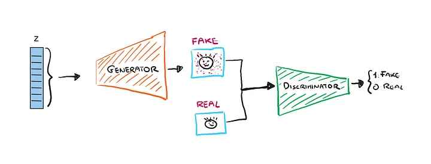
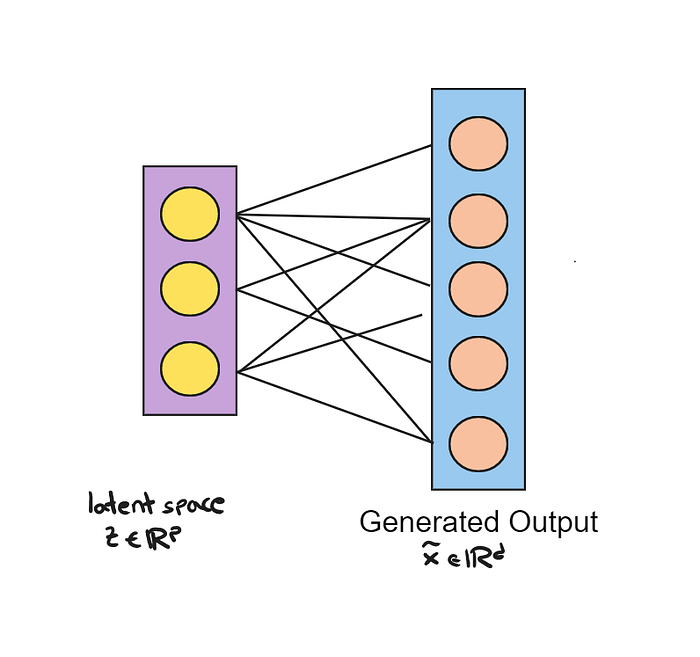
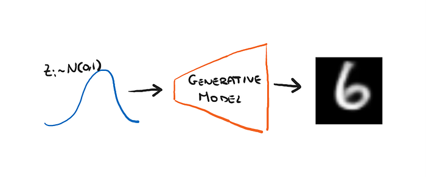
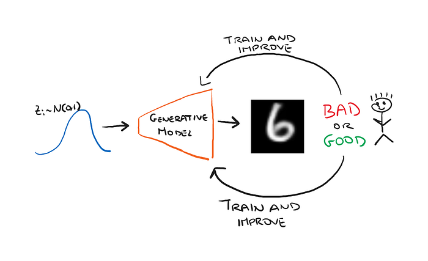
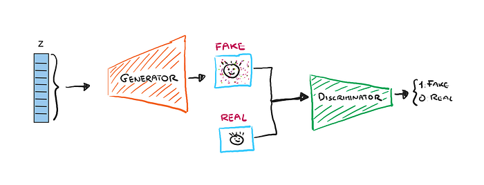
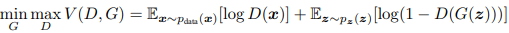
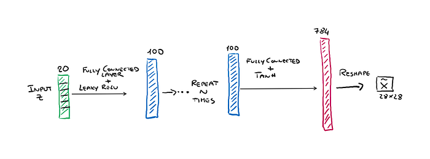
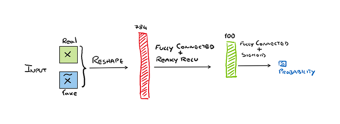
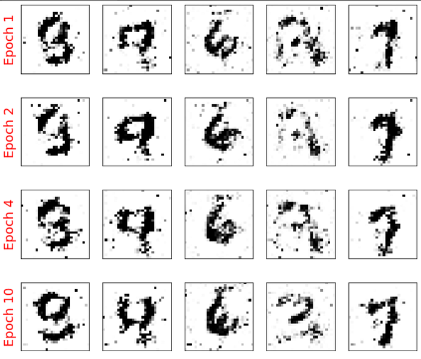

Hands-on Generative AI with GANs using Python: Image Generation
Learn how to implement GANs with PyTorch to generate synthetic images.
August 22, 2024 · GAN, Python, GenAI

Introduction
In my previous article, we learned about Autoencoders, now let’s continue to talk about Generative AI. By now everyone is talking about it and everyone is excited about the practical applications that have been developed. But we continue to see the foundations of these AIs step by step.
There are several Machine Learning models that allow us to build generative AI, to name a few we have Variational Autoencoders (VAE), autoregressive models and even normalizing flow models. In this article, however, we will focus on GANs.
Autoencoders and GANs
In the previous article, we dealt with autoencoders and saw their architecture, their use and implementation in PyTorch.
In short, Autoencoders receive an input x, compress it into a vector of smaller size z, called the latent vector, and finally from z reconstruct x in a more or less approximate way.
In Autoencoder we have no data generation, but simply an approximate reconstruction of the input. Now imagine that we break the Autoencoder in two and consider only the second part, the part where from the latent vector z the image is reconstructed.

In this case, we can say that the architecture is generative. In fact, given a vector of numbers as input this creates an image! Essentially this is what a generative AI does. The main difference though with respect to autoencoders is that we know well the probability distribution from which we take the latent vector z. For example, a Gaussian(0,1).
So we thus have a way to generate images from random numbers taken from a Gaussian distribution, changing these random numbers will change the images we have in the output.

GANs Architecture
The orange network shown in the previous image can be defined as a G function that given the input z generates the synthetic output x_cap, so x_cap = G(z).
The network will be initialized with random weights, so it will not initially be able to generate output that looks real, but only images that will contain noise. So we need to do some training to improve the performance of our network.
So let’s imagine that we have a human annotator telling us each time whether the output is good or not, whether it looks real or not.

Obviously, we cannot do network training expecting a person to make continuous judgments about the output. But then what can we do?
If you think about it what the annotator does, in this case, is binary classification! And we in Machine Learning are great at developing classifiers. So we can simply train a classifier that we’ll call Discriminator, and we’ll denote with the function D(), which has to be trained to recognize synthetic (fake) images versus real images. So we will feed it both fake images and real images.
So this is how our architecture changes.

In short, the architecture is not too complex. The difficulty comes at the time of having to train these two networks G and D.
It is clear that if in training, the two networks have to improve together, they need to find some kind of balance. Because if, for example, D gets too good at distinguishing fake images from real ones before G gets good at generating them, it is quite natural that G will never get better and we will never have our generator ready to be used.
So the two networks are said to play an adversarial game in which G must fool D, and D must not be fooled by G.
GANs Objective Function
If we want to be a bit more precise, we can say that D and G have two complementary goals. Let’s suppose we want to generate images.
We define by D(x) the probability that x is a real image. Obviously, the discriminator wants to maximize its probability of recognizing real inputs from fake inputs. So we want to maximize D(x) when x is drawn from our distribution of real images.
In contrast, the purpose of the generator G is to fool the discriminator. So if G(z) is the fake image generated by G, D(G(z)) is the probability that D will recognize a fake image as real. Then 1-D(G(z)) is the probability that D correctly recognizes a fake image as fake. So G’s goal is to minimize 1-D(G(z)), since he does want to fool D.
So in the end we can sum up this game of maximization and minimization in the formula we find in the original paper (the formula looks a bit more concept but we have seen the concept):

GANs Implementation
We now implement a GAN capable of generating MNIST images automatically.
As usual, I will run my code a cloud-based environment Deepnote but you can use Google Colab as well, so even those who don’t have a GPU on their laptop can run this code.
We start by going to check whether indeed our hardware has a GPU.
import torch
print(torch.__version__)
print("GPU available: ", torch.cuda.is_available())
device = torch.device("cuda:0") if torch.cuda.is_available() else "cpu"Now if you’re using Colab you can connect to Google Drive.
from google.colab import drive
drive.mount('/content/drive/')Let’s import the needed libraries.
import torch.nn as nn
import numpy as np
import matplotlib.pyplot as pltNow we need to create the functions that will define our networks, generator and discriminator.
The MNIST images have 784 pixels (since the images are 28x28). So the generator given as input a random z vector of length 20 will have to output a vector of 784 which will be our fake image.
Instead, the discriminator will receive as input a 28x28 = 784-pixel image, it will have a single neuron in output that will classify the image as true or fake.

def make_generator(
input_size:int = 20,
num_hidden_layers:int = 1,
num_hidden_units:int = 100,
num_output_units:int = 784):
model = nn.Sequential()
for i in range(num_hidden_layers):
model.add_module(f'fc_g{i}',
nn.Linear(input_size, num_hidden_units))
model.add_module(f'relu_g{i}', nn.LeakyReLU())
input_size = num_hidden_units
model.add_module(f'fc_g{num_hidden_layers}',
nn.Linear(input_size, num_output_units))
model.add_module('tanh_g', nn.Tanh())
return modelThis function is used to instantiate the generator. Each layer will use a LeakyReLU (a variation of the ReLU, that works best in GANs) as its activation function, except the output is followed by a Hyperbolic Tangent (Tanh) function that results in output a number in the range [-1,1].

def make_discriminator(
input_size:int = 784,
num_hidden_layers:int = 1,
num_hidden_units:int = 100,
num_output_units:int = 1
):
model = nn.Sequential()
for i in range(num_hidden_layers):
model.add_module(f'fc_d{i}',
nn.Linear(input_size, num_hidden_units, bias = False))
model.add_module(f'relu_d{i}', nn.LeakyReLU())
model.add_module('dropout', nn.Dropout(p = 0.5))
input_size = num_hidden_units
model.add_module(f'fc_d{num_hidden_layers}',
nn.Linear(input_size, num_output_units))
model.add_module('sigmoid', nn.Sigmoid())
return modelInstead, this function defines the discriminator network, which has the special feature of using dropout after hidden layers (in the base case only one hidden layer). The output goes through a sigmoid function since it must give us the probability of being a real or fake image.
Now we also download the MNIST dataset that we are going to use. The MNIST dataset is in a range [0,255], but we want it in the range [-1,1] so that it will be similar to the data generated by the Generator network. So we also apply some preprocessing to do this.
import torchvision
from torchvision import transforms
image_path = './'
transform = transforms.Compose([
transforms.ToTensor(),
transforms.Normalize(mean = (0.5), std = (0.5)),
])
mnist_dataset = torchvision.datasets.MNIST(
root = image_path, train = True,
transform = transform, download = True
)Now we come to the most important part. We need to create the functions that define the training of our network. We have already said that we should pull the discriminator separately from the generator, so we will have 2 functions.
loss_fn = nn.BCELoss()
## train discriminator
def d_train(x):
disc_model.zero_grad()
#train discriminator with a real batch
batch_size = x.size(0)
x = x.view(batch_size, -1).to(device) #reshape input
d_labels_real = torch.ones(batch_size, 1, device = device)
d_proba_real = disc_model(x)
d_loss_real = loss_fn(d_proba_real, d_labels_real)
#train discriminator with a fake batch
input_z = create_noise(batch_size, z_size, mode_z).to(device)
g_output = gen_model(input_z)
d_proba_fake = disc_model(g_output)
d_labels_fake = torch.zeros(batch_size, 1, device = device)
d_loss_fake = loss_fn(d_proba_fake, d_labels_fake)
#gradient backprop & otimizeonlys Disc
d_loss = d_loss_real + d_loss_fake
d_loss.backward()
d_optimizer.step()
return d_loss.data.item(), d_proba_real.detach(), d_proba_fake.detach()The discriminator will be trained both on the fake data and on real data. When we train it on real data the labels will always be “real” = 1. So we create a vector of 1 with d_labels_real = torch.ones(batch_size, 1, device = device). Then we feed the input x to the model and calculate the loss using Binary Cross Entropy.
We do the same thing by feeding fake data. Here the labels will all be zero, d_labels_fake = torch.zeros(batch_size, 1, device = device). The input instead will be the fake data, that is, the output of the generator g_output = gen_model(input_z). And we calculate the loss in the same way.
The final loss will be the sum of the two losses.
## train generator
def g_train(x):
gen_model.zero_grad()
batch_size = x.size(0)
input_z = create_noise(batch_size, z_size, mode_z).to(device)
g_labels_real = torch.ones(batch_size, 1, device = device)
g_output = gen_model(input_z)
d_proba_fake = disc_model(g_output)
g_loss = loss_fn(d_proba_fake, g_labels_real)
#gradient backprop & otpimize Gen
g_loss.backward()
g_optimizer.step()
return g_loss.data.item()As for the generator train function, the implementation is slightly different. The generator takes as input the output of the discriminator since it has to see if D has figured out whether it is a fake or real image. And based on that it calculates its loss.
Now we can initialize our two networks.
image_size = (28,28)
z_size = 20
gen_hidden_layers = 1
gen_hidden_size = 100
disc_hidden_layers = 1
disc_hidden_size = 100
gen_model = make_generator(
input_size = z_size,
num_hidden_layers = gen_hidden_layers,
num_hidden_units = gen_hidden_size,
num_output_units = np.prod(image_size)
)
disc_model = make_discriminator(
input_size = np.prod(image_size),
num_hidden_layers = disc_hidden_layers,
num_hidden_units = disc_hidden_size
)
gen_model = gen_model.to(device)
disc_model = disc_model.to(device)
loss_fn = nn.BCELoss()
g_optimizer = torch.optim.Adam(gen_model.parameters())
d_optimizer = torch.optim.Adam(disc_model.parameters())Let’s define a function to create network-generated samples, so as we go along we can see how the fake images improve as the training epochs increase.
fixed_z = create_noise(batch_size, z_size, mode_z).to(device)
def create_samples(g_model, input_z):
g_output = g_model(input_z)
images = torch.reshape(g_output, (batch_size, image_size[0], image_size[1]))
return (images+1)/2.0Now we can finally train the net! We save the losses each time in a list so we can plot them later.
from tqdm import tqdm
epoch_samples = []
all_d_losses = []
all_g_losses = []
all_d_real = []
all_d_fake = []
num_epochs = 100
for epoch in tqdm(range(1, num_epochs+1), total = num_epochs):
d_losses, g_losses = [], []
d_vals_real, d_vals_fake = [], []
for i, (x,_) in enumerate(dataloader):
d_loss, d_proba_real, d_proba_dake = d_train(x)
d_losses.append(d_loss)
g_losses.append(g_train(x))
d_vals_real.append(d_proba_real.mean().cpu())
d_vals_fake.append(d_proba_fake.mean().cpu())
all_d_losses.append(torch.tensor(d_losses).mean())
all_g_losses.append(torch.tensor(g_losses).mean())
all_d_real.append(torch.tensor(d_vals_real).mean())
all_d_fake.append(torch.tensor(d_vals_fake).mean())
print(f'Epoch {epoch:03d} | Avg Losses >>'
f'G/D {all_g_losses[-1]:.4f}/{all_d_losses[-1]:.4f}'
f' [D-Real: {all_d_real[-1]:.4f}'
f' D-Fake: {all_d_fake[-1]:.4f}]')
epoch_samples.append(
create_samples(gen_model, fixed_z).detach().cpu().numpy()
)The training should take about an hour, depending on the hardware cha you used certainly. But in the end, you can print out your fake data and have something like this.
selected_epochs = [1, 2, 4, 10, 50, 100]
fig = plt.figure(figsize = (10,14))
for i,e in enumerate(selected_epochs):
for j in range(5):
ax = fig.add_subplot(6,5, i*5+j+1)
ax.set_xticks([])
ax.set_yticks([])
if j == 0:
ax.text(
-0.06, 0.5, f'Epoch {e}',
rotation = 90, size = 18, color = 'red',
horizontalalignment = 'right',
verticalalignment = 'center',
transform = ax.transAxes
)
print(e-1,j)
image = epoch_samples[e-1][j]
ax.imshow(image, cmap = 'gray_r')
plt.show()In my case, I trained for a few epochs so the results are not great, but you are beginning to get a glimpse that the network was learning to generate MNIST-like images.

Final Thoughts
In this article, we looked at how the architecture of GANs in more detail. We studied their objective function and were able to implement a network capable of generating images from the MNIST dataset! The operation of these networks is not too complicated but their training certainly is. Since we need to find that balance that allows both networks to learn. If you enjoyed this article follow me to read the next one on DCGANs.😉
The End
Marcello Politi
This article was published on Towards Data Science